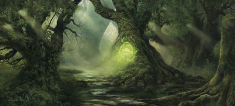
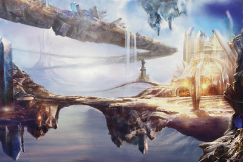
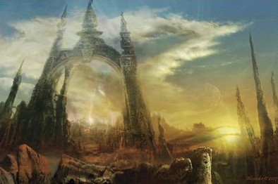

Plans
La religion est une partie importante de la vie dans les mondes de D&D.
Lorsque des dieux parcourent le monde, des clercs canalisent la puissance
divine, des sectes perverses effectuent de sombres sacrifices dans des sites
souterrains et des paladins se dressent contre l'obscurité, il est difficile
d'être sceptique au sujet des divinités et de nier leur existence. Beaucoup
de personnes dans les mondes de D&D adorent des dieux différents, à
différents moments et en différentes circonstances. On prie Sunie pour avoir
de la chance en amour, on fait une offrande à Waukyne avant de partir pour
le marché, et on prie pour apaiser Talos quand une violente tempête souffle,
tout cela durant la même journée. Nombreux sont toutefois ceux qui ont un
favori parmi les dieux, et certains se consacrent entièrement à un seul
dieu, servant généralement comme clerc ou champion des idéaux de ce dieu.
Chaque monde du multivers de D&D possède son propre panthéon de divinités.
Le panthéon décrit ici est celui des Royaumes Oubliés pour D&D 5. Des
dizaines de divinités sont ainsi vénérées, adorées, et craintes à travers le
monde des Royaumes Oubliés. Au moins trente divinités y sont largement
connues à travers tout le continent, et bien d'autres sont adorées au niveau
local, par des tribus, de petits cultes ou certaines sectes de grands
temples religieux.

Plan matériel
Le premier des plans est le monde dans lequel les humains et autres mortels
naissent et vivent, et qui n'est souvent connu que par le nom du monde.
Ainsi, les sages de Faerûn appellent leur monde Abeir-Toril. Mais quand on
parle de plans, le monde correspond au terme de plan matériel. À ses côtés
s'étendent ensuite ses reflets, les plans parallèles : la Féerie et la
Gisombre. Les plans parallèles sont d'étranges copies du monde matériel. Le
monde est fait de mers et de montagnes et l'on retrouve ces espaces et
reliefs dans les plans parallèles, mais il ne s'agit cependant pas de
reproductions exactes. Une cité humaine prospère du monde des mortels pourra
ainsi donner un vallon boisé en Féerie et une ruine hantée en Gisombre. Il
semblerait que la version féerique d'un site du monde naturel soit en fait
un souvenir immaculé de ce qu'il était au tout début, tandis que la Gisombre
le représente tel qu'il sera quand son peuple aura disparu et qu'il n'en
restera que des ruines.
La Féerie

La Féerie (parfois aussi connue sous le nom de plan des Fées) est le double
verdoyant et sauvage du monde des mortels. De vertigineuses forêts s'y
étalent sur des milliers de lieues. Des prairies ambrées parfaites et
vallonnées séparent des montagnes dont les pics enneigés disparaissent dans
les nuages. Des mers vert émeraude, turquoise et jade déferlent sur des
plages sans fin. Le bleu pur du ciel, inconnu du monde matériel, abrite des
orages dont la masse nuageuse noire comme le charbon bouillonne sous l'effet
de vents violents et de pluies torrentielles. Ici, l'énergie arcanique
vrombit dans le moindre arbre, le moindre caillou. Toute existence est
magique. La Féerie est un plan parallèle aux dimensions et à la topographie
semblables au monde des mortels découpée en domaine, chacun d'eux sous le
contrôle d'un archifée.
Les créatures originaires de la Féerie, tels les dangereuses guenaudes et
les farouches dryades, sont chargées de l'énergie mystique de ce plan. Mais
si elle est une bénédiction pour certains, elle en pervertit d'autres. Tout
comme leur environnement, les créatures féeriques qui résident sur ce plan
tendent à se placer dans les extrêmes. Celles qui sont bonnes, nobles et
justes protègent le monde naturel et les mortels auxquels elles choisissent
d'accorder leur faveur. Celles qui sont mauvaises incarnent le déchaînement
de l'instinct le plus primaire sous le signe du sang, des griffes et de la
colère. Les créatures de Féerie peuvent être avenantes, cruelles, nobles,
monstrueuses et féroces, et souvent tout cela à la fois. On y trouve des
elfes, des satyres, des pixies, des feux follets, mais aussi des chiens
esquiveurs, des dragons féeriques, des sylvaniens, des licornes, ainsi que
des gobelins, des ogres et des géants.
La Gisombre

La Gisombre est l'écho ténébreux du monde des mortels, un lieu de ténèbres
impénétrables aux paysages familiers et pourtant différents, qui offre des
décors à couper le souffle et des visions à faire perdre l'esprit, un
domaine crépusculaire qui est comme « l'envers » du monde et de ses
habitants. La légende raconte qu'une obscurité surnaturelle grandit autour
des vestiges de la matière brute qui servit à la création. Avec le temps,
cette obscurité s'aggloméra pour prendre une forme similaire à celle du
monde physique, mais plus sombre et lugubre, vibrant d'un pouvoir étrange et
inattendu. Cette terre obscure engendra ses propres enfants et attira
d'autres êtres des différentes régions du cosmos. Elle finit par être
habitée par une population de créatures diverses, certaines bienveillantes,
d'autres malveillantes. La Gisombre est plus qu'un simple reflet obscur et
déformé. Ce plan est la destination des âmes libérées de leur corps, le
domaine des défunts, l'ultime étape des âmes avant leur voyage vers
l'inconnu. C'est pour cela que la Gisombre attire l'attention de tous ceux
qui s'intéressent à la mort. C'est un plan parallèle aux dimensions et à la
topographie semblables au monde des mortels.
La Féerie rappelle au voyageur le monde des mortels, avec une exagération de
la luxuriance végétale. La Gisombre est pareillement évocatrice du monde des
mortels, mais le reflet qu'elle en propose est bien différent. Les paysages,
les êtres et les lieux familiers sont transformés, comme s'ils surgissaient
de cauchemars à demi oubliés ou avaient été pervertis par la peur et le
doute. Les dangers sont nombreux en Gisombre : dragons d'ombre,
morts-vivants, manteleurs, mantes obscures. Pourtant l'attrait de trésors
perdus, de mystères étranges (notamment ceux de la mort) et de visions
irréelles attirent les audacieux ou les insensés qui viennent éprouver leur
courage en affrontant les forces des ténèbres qui gouvernent ce plan
lugubre. En fait, pour beaucoup de visiteurs de Gisombre, ce plan a plus de
points communs avec le monde physique qu'il n'a de différences, ce qui est à
la fois réconfortant et troublant.
Plans transitifs
Le plan astral et le plan éthéré sont des plans appelés transitifs. Ils
constituent le ciment qui confère à la cosmologie son intégrité. Grâce à
eux, on peut passer d'un plan à un autre ou traverser le plan matériel à
grande vitesse et en toute facilité. Essentiellement vides, la majorité de
l'espace qui les compose n'est utilisé que pour accéder à d'autres plans.
Sorts et pouvoirs magiques sont les moyens les plus courants visant à
pénétrer dans les plans transitifs. Les portails et les vortex donnant
dans les plans transitifs sont toutefois rares. Souvent, les portails ne
font que courir à travers ces plans et mènent ailleurs. Ainsi, de nombreux
portails magiques passent par le plan astral, mais peu de portails mènent
directement au plan astral.
Plans positifs et négatifs
Comme un dôme au-dessus des autres plans, le plan positif est la source
de l'énergie radiante et la force de vie brute qui imprègne tous les
êtres vivants, du plus chétif au plus fort. Son sombre reflet est le
plan négatif, source de l'énergie nécrotique qui détruit les vivants et
anime les morts-vivants.
Le plan éthéré
Vous ne le voyez pas et pourtant, il se trouve juste à côté de vous. Le plan
éthéré est une dimension brumeuse coexistante avec le plan matériel. Les
voyageurs traversant le plan éthéré le décrivent comme un monde composé de
nuages tourbillonnants et de brumes colorées. Le plan matériel lui-même est
visible depuis le plan éthéré, mais il semble assourdi et indistinct, ses
couleurs se fondant les unes dans les autres et ses bords s'estompant dans
un flou brumeux. Le plan éthéré est par contre généralement invisible aux
yeux des créatures du plan matériel. Un voyageur situé dans le plan éthéré
est invisible, intangible et complètement silencieux pour un personnage
situé dans le plan matériel. Ainsi, le plan éthéré est très utile pour des
missions de reconnaissance, pour espionner ses adversaires et pour d'autres
situations où il est intéressant de pouvoir se déplacer sans être détecté.
Le plan éthéré est principalement vide de structures et d'obstacles, mais il
possède ses propres habitants. C'est un lieu hanté par des fantômes et des
monstres.
Le plan astral
C'est l'espace qui sépare tout, la route qui mène partout, le lieu où l'on
se trouve lorsque l'on n'est nulle part ailleurs. Le plan astral est
l'espace qui sépare les plans. Lorsqu'un personnage franchit un portail
interplanaire ou projette son esprit dans un plan d'existence différent,
alors il voyage à travers le plan astral. Même les sorts permettant un
mouvement instantané à travers un plan, comme porte dimensionnelle, touchent
brièvement au plan astral. Le plan astral est une formidable sphère infinie
de ciel clair et argenté, s'ouvrant aussi bien en haut qu'en bas. De larges
nuages en forme de tubes ondulent paresseusement au loin, certains rappelant
ceux d'un orage et d'autres des tornades immobiles de vents gris. Des
tourbillons de couleur erratiques dansent à mi-hauteur, tels des pièces de
monnaie tournoyantes. On aperçoit à l'occasion quelque morceau de matière
solide, mais la majorité du plan astral est un lieu ouvert et infini. Ses
principaux habitants sont les githyankis, une race de proscrits faisant
leurs proies des voyageurs passant par le plan.
Plans intérieurs

Les plans intérieurs sont des lieux de puissance brute et de purs éléments,
d'états ultimes et de conditions extrêmes. Ce sont les fondations de
l'univers et ils représentent la matière et l'énergie à leurs états
primaires. Ils sont constitués de quatre plans élémentaires (Terre, Air, Feu
et Eau) entourés du tourbillonnant Chaos élémentaire. Chaque plan intérieur
est une région d'un environnement plus ou moins constant. Par exemple, le
plan élémentaire de la Terre est principalement composé de matière solide,
alors que les flammes règnent dans le plan élémentaire du Feu.
Le Chaos élémentaire
Au sein du Chaos élémentaire, les substances et les énergies élémentaires
entrent en collision dans un cycle sans fin de création et de destruction.
Il s'agit de la matière dont le monde est constitué. Le paysage du Chaos
élémentaire est brisé par des rivières d'éclairs, des mers de feu, des îlots
terreux flottant, des montagnes de glace, et d'autres particularités
fantastiques.
Plans extérieurs

Si les plans intérieurs sont la matière et l'énergie brute qui font le
multivers, les plans extérieurs en sont la direction, la pensée et le but.
De même, bien des sages se réfèrent à ces plans sous les termes de plans
divins ou plans spirituels, car les plans extérieurs sont mieux connus pour
être la résidence des divinités. Les dieux peuvent fort bien vivre ailleurs,
mais ils prospèrent en ces endroits. D'autres créatures y résident aussi ;
certaines servent ces divinités et d'autres conservent férocement leur
indépendance. Les plans extérieurs les plus connus sont un groupe de seize
plans qui correspondent aux huit alignements (en excluant le neutre) et leur
transition. Les plans contenant un élément du Bien dans leur nature sont les
plans supérieurs, comme Céleste (LB). Les plans contenant un élément du Mal
sont les plans inférieurs, comme les Neuf enfers (LM) ou les Abysses (CM).
Au sein du Chaos élémentaire, les substances et les énergies élémentaires
entrent en collision dans un cycle sans fin de création et de destruction.
Il s'agit de la matière dont le monde est constitué. Le paysage du Chaos
élémentaire est brisé par des rivières d'éclairs, des mers de feu, des îlots
terreux flottant, des montagnes de glace, et d'autres particularités
fantastiques.
-
Mont Céleste (LB). Modèle de justice et d'ordre défendu par des anges ;
demeure des dieux nains et des dieux halfelins.
-
Bytopie (LB, NB). La satisfaction du travail bien fait ; demeure des dieux
gnomes.
-
Élysée (NB). Un havre tranquille pour profiter d'un repos bien mérité.
- Terre des Bêtes (NB, CB). Nature sauvage et belle.
-
Arborée (CB). Montagnes et forêts où vivent de nombreux elfes et dieux
elfes.
-
Ysgard (CB, CN). Fjords et océans de pierres volcaniques peuplés
d'humains, de nains, mais aussi de géants et de dragons.
-
Limbes (CN). Pure chaos sans gravité où vivent les slaads et de nombreux
moines githzerais.
-
Pandémonium (CN, CM). Plan de la folie, sans lumière naturelle, sur lequel
des créatures sont envoyées en guise de punition.
-
Abysses (CM). Inhospitaliers et pervers, les Abysses sont la demeure des
démons.
-
Carcères (CM, NM). Plan de désolation et désespoir, les six strates de
Carcères sont de véritables prisons.
-
Hadès (NM). Destination de nombreuses âmes non-réclamées sur les autres
plans, c'est un lieu triste et désespéré.
-
Géhenne (NM, LM). Plan de la suspicion, les quatre strates volcaniques de
Géhenne sont le berceau des yugoloths.
-
Neuf enfers (LM). Demeure d'Asmodée, de ses archidiables et des diables.
-
Achéron (LM, LN). Les quatre strates de ce plan, faites d'énormes cubes
flottants en acier, accueillent les esprits de soldats tombés.
- Méchanus (LN). C'est le plan des modrons.
-
Arcadie (LN, LB). Pureté, harmonie, ordre et royaumes nains caractérisent
ce plan gouverné par quatre demi-dieux.
La plupart de ces plans ont été créés par des divinités et reflètent donc
les goûts esthétiques (et parfois les caprices) de leur artisan. Les
domaines peuvent afficher des caractéristiques et propriétés très
différentes. Certains ont la taille de mondes, tandis que d'autres ne sont
que des tours isolées ou de petites villes. La littérature et les arts les
dépeignent souvent comme de majestueuses îles ou fragments de paysage
flottant, enveloppés par une mer éthérée aussi plate et lisse qu'un miroir.
Les domaines astraux sont généralement perçus comme le paradis et les enfers
du monde des mortels. C'est là que la plupart des dieux trônent et y
attendent les esprits des mortels après le trépas, ceux qui méritent une
récompense spéciale ou d'être tourmentés et séquestrés par les diables ou
quelque sombre divinité.
Autres plans
Entre tous ces plans, ou bien plus loin que ceux-ci, il existe encore
d'autres plans.
Demi-plans
Les demi-plans sont des espaces extra-dimensionnels limités et régis par
leurs propres règles. Ce sont des morceaux de réalité qui ne semblent être à
leur place nulle part ailleurs. Ils peuvent présenter tout un éventail de
caractéristiques et existent pour toutes sortes de raisons. Ils peuvent être
créés par des sorts ; ils peuvent être le résultat du désir d'une puissante
divinité ou d'une autre force ; ils peuvent également exister naturellement,
comme des pliures de la réalité détachées du reste de l'univers, ou bien en
tant qu'univers à l'état embryonnaire dont le pouvoir grandit lentement. La
plupart des demi-plans sont petits et secrets. Ils jouent un rôle de refuge,
de chambre forte, voire plus rarement de tombeau ou de prison.
Le Royaume lointain

Le cosmos compte également certains plans dont la nature n'est pas claire.
C'est le cas du Royaume lointain qui repousse les limites d'une cosmologie
déjà fantastique. C'est l'étrange parmi l'étrange. Le Royaume lointain est
en effet un plan (ou peut-être un espace au-delà des plans) terriblement
distant et incompréhensible. Les créatures qui y vivent sont bizarres et
trop étranges pour qu'un esprit normal puisse en accepter l'idée sans
souffrir. Là où une lueur du Royaume lointain s'égare sur le monde, la
matière se met à réagir en réponse à des stimuli inexplicables, avant de
brûler en cendres ou de prendre vie ; une vie de monstre. Là où le Royaume
lointain touche la vie, des monstruosités appelées aberrations sont formées.
Certaines, comme les aboleths et les flagelleurs mentaux, proviennent de cet
endroit. La plupart, cependant, sont des transmutations étranges de formes
de vie existantes.